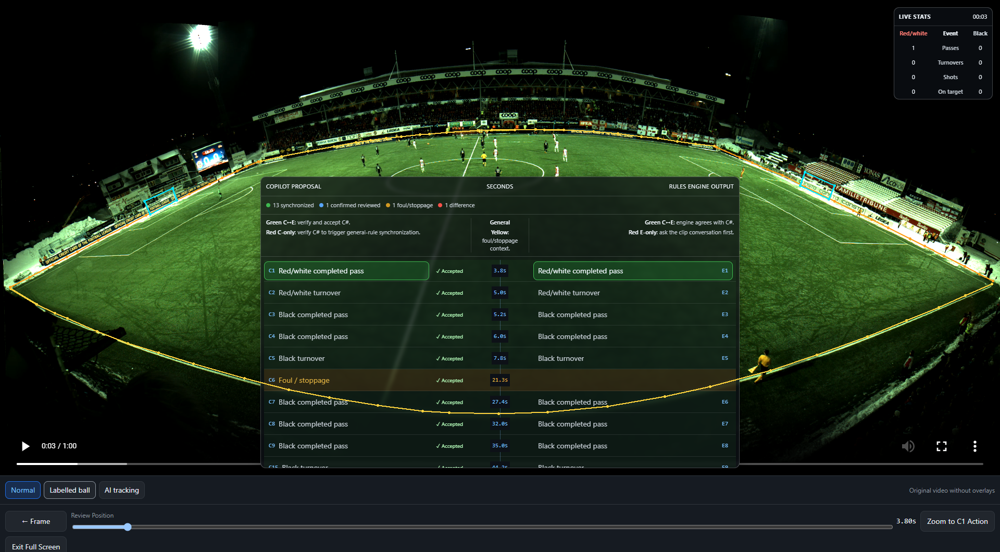

Control the evidence
Prepare a focused 30–60 second window instead of treating a full match as one opaque run.
Evidence before statistics
A local-first football intelligence platform that segments match video, detects candidate events, applies documented rules, and lets Copilot independently review the evidence before statistics become trusted.

Current platform
The rules engine and Copilot share definitions, not answers. Each conclusion must remain supported by the selected video and match-state evidence.
Prepare a focused 30–60 second window instead of treating a full match as one opaque run.
Tracking, possession, match state, and analytics definitions produce reproducible E# events.
Copilot creates C# proposals from targeted evidence without using the engine event as its answer.
Only reviewed decisions, matching fingerprints, and protected regressions can publish and lock a segment.
Current proof
The 15:00–16:00 demonstration segment passed the full publication gate. Every included event has a review decision and a one-to-one engine match under the recorded source and output fingerprints.
Independent review
Agreement is useful, but it is not proof. The platform keeps engine inference and Copilot adjudication independent until both conclusions are complete.
Tracking, possession, match state, and analytics definitions produce reproducible events. The engine does not see or learn from manual review labels.
Copilot inspects the targeted video window using football law and the project’s analytics definitions. Only afterward are C# and E# matched by type, team, and time.
Camera calibration
The review screen loads the saved camera calibration and projects the traced pitch boundary and goal frames onto the footage. Operators can show, redraw, undo, restore, and download that geometry without leaving the segment workflow.
Honest maturity
No blanket “AI accuracy” claim hides different levels of validation across statistics.
Working event state machines with published segment references and protected regression coverage.
Event definitions exist; more independently reviewed windows are required before broader claims.
Boundary and restart evidence is being connected to the same guarded review workflow.
Offsides, formations, player actions, and richer team statistics remain future work.
Query By Probability
One strong primary camera handles the continuous match. When ball, player, or event confidence drops, the platform queries only the relevant frames from goal-end or touchline cameras, then fuses those observations to strengthen the decision. Secondary streams are not processed continuously.
Xebia Innovation Day
Open the branded story, current demonstration, landscape board, and developer guide. The purple review experience changes presentation—not football logic.
Explore
Use the platform video for the complete narrative or enter the Xebia-themed Innovation Day experience for the live presentation.
Platform walkthrough
Segmentation, calibrated footage, independent review, validation gates, statistics, and future architecture.
Presentation experience
Use the themed story, landscape board, developer setup, and purple live review experience.
Live application
Launch the Copilot Canvas with the default or Innovation theme, then prepare, inspect, adjudicate, and publish a controlled segment.
Landscape presentation
Present the default product story, calibrated review proof, maturity, and future architecture on one 16:9 board.
Developer workflow
See the independent review process, acceptance decisions, code-change rules, and publication gate on one board.